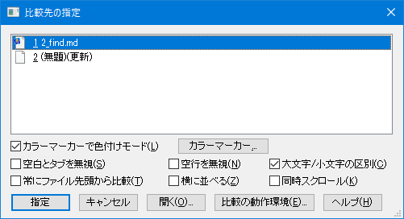
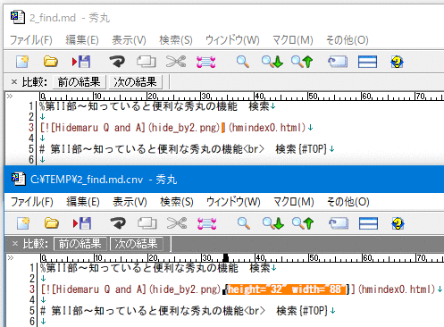

メニューの「ウィンドウ」-「他の秀丸エディタと内容比較」を使うと、編集中の秀丸エディタと、他の秀丸エディタの内容を比較できます。
以前のバージョンでは、違う箇所にカーソルが移動するだけでしたが、Ver.8以降は相違部分がカラーマーカーで表示されます。
「他の秀丸エディタと内容比較」を実行するには、最低でも2つの秀丸エディタ(比較元と比較先)が開いている必要があります。ファイルを1つしか開いていない場合、「他の秀丸エディタと内容比較」は無効になり、実行できません。
「他の秀丸エディタと内容比較」を実行すると、「比較先の指定」ダイアログが開きます。(この動作は設定で変更可能)

画像は、以下の3つのファイルを開いている状態で実行した場合です。
「編集中の秀丸エディタ」以外の2つのファイルが、比較対象のファイルとしてリストに表示されています。
リストから「比較対象のファイル」を選択し、「指定」ボタンを押すと、設定された条件で比較を開始します。

設定に関してはヘルプの比較を参照してください。
「比較先の指定」ダイアログで設定を変更すると「動作環境」-「その他のコマンド」-「比較」の設定も変更されます(一時的に設定を変えるという意味ではありません)。
Ver.8.94から、「比較先の指定」ダイアログに、「横に並べる」「同時スクロール」が追加されています。
「横に並べる」は実行時に比較対象ファイルを自動で横に並べます。カーソルも同時に移動するので、「同時スクロール」もチェックしておくと便利でしょう。
「横に並べる」を有効にした場合、並べる前のサイズ・位置に戻すことは出来ません。
注意が必要なのは「常にファイル先頭から比較」です。チェックがOFFの場合は、お互いのカーソル位置を基準に比較を開始します。
「カラーマーカーで色付けモード」がOFFの場合、最初の差異がある箇所にカーソルが移動します。「カラーマーカーで色付けモード」がONだと、「すべて検索-色付け」を実行したときのように、差異のある場所へ順次移動可能です。
「開く」ボタンを押すと、ファイルを開くことができますが、「比較先の指定」ダイアログは閉じてしまいます。
「比較の動作環境」ボタンを押すと、「動作環境」-「その他のコマンド」-「比較」が開きます。「比較先の指定」ダイアログを開いたときの状態を設定できます。
「比較対象のダイアログを常に出す」がOFFで「他の秀丸エディタと内容比較」を実行した場合、他の秀丸エディタが１つしかないときは、設定された内容で自動的に比較が始まります。
「他の秀丸エディタと内容比較」を実行すると以下のキーワードにウィンドウハンドルが設定されます。 (実行していない場合は0になっている)
ウィンドウハンドルが設定されていても、「他の秀丸エディタと内容比較」を一度でも実行するとウィンドウハンドルがセットされたままになるので、「他の秀丸エディタと内容比較」が実行中かどうかの判断には使えません。
マクロで「他の秀丸エディタと内容比較」が実行中なのか、確実に判断する方法はありません。「カラーマーカーで色付けモード」が有効な場合は判断可能ですが、無効の場合は無理です。
「カラーマーカーで色付けモード」が有効なら、以下の条件で実行中と判断できます。
compfilehandle に値がセットされている。